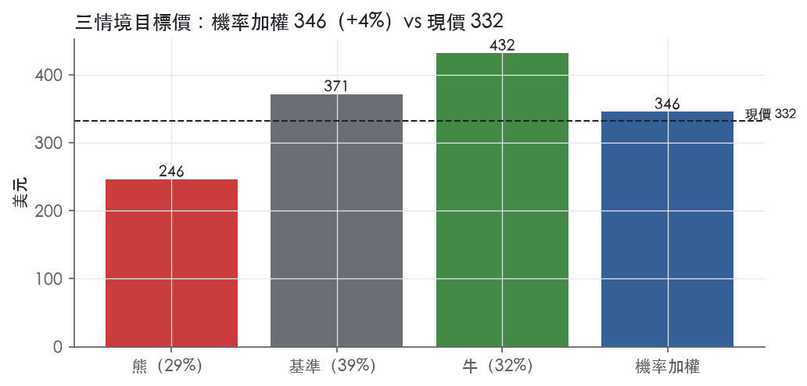
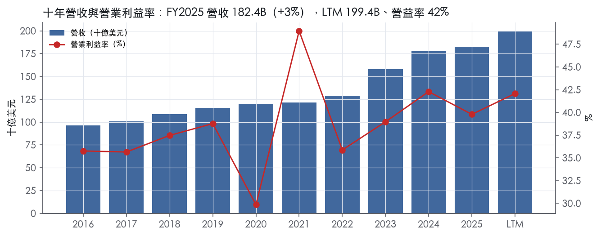
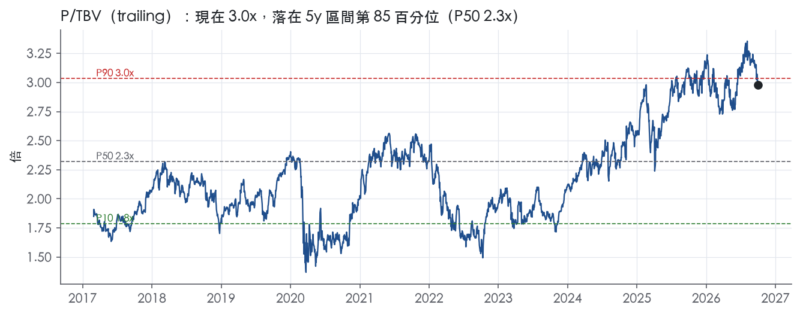
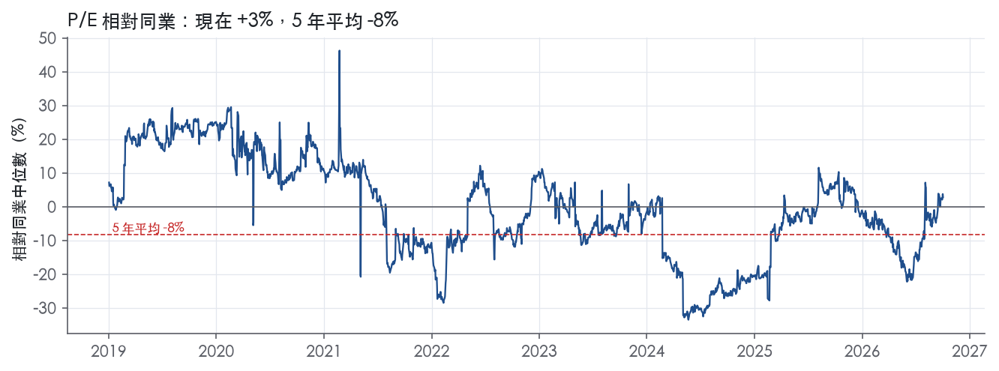
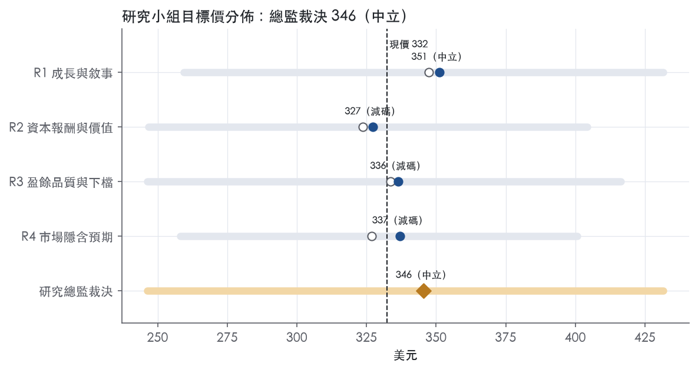
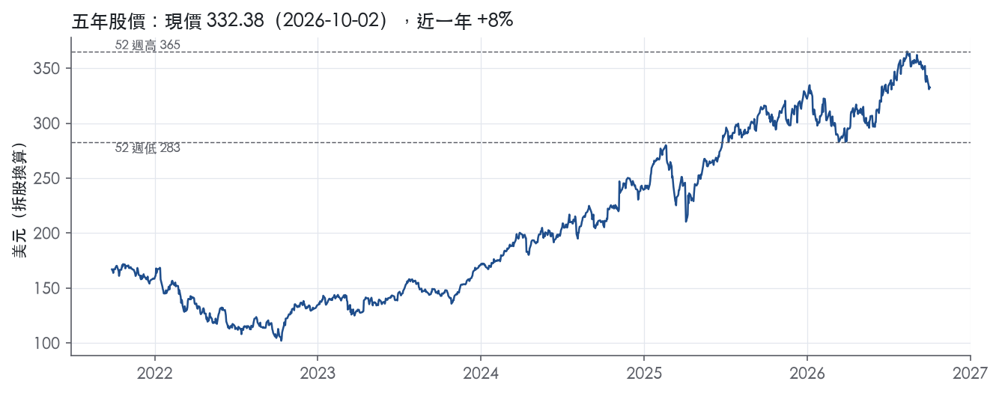

評等總表 › 金融 › JPM
盈餘收斂、倍數守3.0x，中性｜評等 中立｜目標價 346
| 評等 | 中立（邊界，鄰近減碼） |
| 12 個月目標價 | 346 美元 |
| 現價 | 332.38 美元（2026-10-02） |
| 預期報酬 | 股價 +4.0%＋股息 1.8%＝總報酬 +5.8%；同業籃門檻 10.2%，超額 -4.5% |
| 估值方法 | P/TBV 3.0x，套在一年後的有形淨值 |
| 三情境 | 熊 246／基準 371／牛 432 |
| 研究流程 | 四位研究員兩輪辯論＋研究總監裁決 |
| 資料來源 | SEC EDGAR XBRL、Tiingo、FRED（全免費） |
盈餘收斂、倍數守3.0x，中性（研究總監裁決，四位研究員兩輪辯論後）
評等 中立（邊界，鄰近減碼）｜12 個月目標價 346 美元（總監三情境機率加權 354 與研究員中位數 337 各半）｜現價 332.38（2026-10-02）
預期報酬：股價 +4.0%＋股息 1.8%＝總報酬 +5.8%。同業籃門檻 10.2%，超額 -4.5%，離減碼的分界不到三個百分點，屬邊界評等（落在其他級距的機率約五成）。
估值方法：P/TBV 3.0x，套在一年後的有形淨值。三情境：熊 246（29%）／基準 371（39%）／牛 432（32%）。
什麼會讓研究總監改變看法：3Q26、4Q26 連兩季無重大項目下 ROTCE 低於 19% 或信用成本率回到 1.3%，倍數降到 2.7x 轉偏空；連兩季 ROTCE ≥22% 且 Markets 年增轉負，倍數上修到 3.2x 轉偏多。
| 過去四季（實際，FY2026Q2） | 未來四季 | 第 5–8 季 | 第 9–12 季 | |
|---|---|---|---|---|
| 淨營收（B） | 199.4B | 211.4B | 223.0B | 235.3B |
| 淨營收成長 | 13.5% | 6.0% | 5.5% | 5.5% |
| 稅前利益率 | 42.1% | 40.5% | 40.0% | 40.0% |
| EPS（美元） | 23.39 | 26.09 | 28.02 | 30.48 |
| EPS 成長 | 19.7% | 11.5% | 7.4% | 8.8% |
| 每股股息（美元） | 6.00 | 6.00 | 6.00 | 6.00 |
| ROTCE | 21.2% | 21.7% | 21.3% | 21.0% |
| 每股有形淨值（美元） | 113.18 | 123.77 | 136.04 | 150.54 |
| P/E（現價） | 14.2x | 12.7x | 11.9x | 10.9x |
| P/TBV（現價） | 2.9x | 2.7x | 2.4x | 2.2x |
| 股息殖利率（現價） | 1.8% | 1.8% | 1.8% | 1.8% |
過去四季為申報數字；預測為研究總監的假設、程式計算。倍數與殖利率都用現價計算，用來看現價對應各期獲利的高低。
| 情境 | 機率（歷史） | 故事 | 未來四季營收成長 | 第 5–8 季稅前利益率 | 倍數 | 目標價 | 股價漲跌 |
|---|---|---|---|---|---|---|---|
| 熊 | 29%（26%） | 風險表第1條 Markets/IB 自紀錄高點回落疊加第3條信用成本回升，固定費用去槓桿使稅前利益率回到 FY2022 水準，倍數回到 3y P10 | -2.0% | 35.0% | 2.1x | 246 | -25.9% |
| 基準 | 39%（41%） | 利得退出基期、Markets 持平略減、費用增速降到高個位數，ROTCE 向兩成收斂，倍數停在 1y 中位 3.0x | 6.0% | 40.0% | 3.0x | 371 | 11.7% |
| 牛 | 32%（32%） | Markets 與投行週期延續、核心成長維持 1H26 以上速度，核心 ROTCE 守住 23%，倍數升到 1y P90 之上 | 12.0% | 42.5% | 3.4x | 432 | 29.9% |
目標價由程式依研究總監的驅動與倍數計算；機率由研究總監給定。括號內是歷史頻率：把這檔股票過去十年 12 個月報酬的波動形狀，置中在基準情境，結果落在各情境附近的比例。

四位研究員用不同方法各自估值，回應研究總監的質疑後交出第二輪，最後由總監逐點裁決。各研究員的主張見第七章，裁決理由見第八章，完整論證見《研究底稿》。
| 立場（一輪→二輪） | 加權目標價（一輪→二輪） | 評等（一輪→二輪） | 第二輪倍數 | 熊～牛目標價 | |
|---|---|---|---|---|---|
| R1 成長與敘事 | 中性→中性 | 347→351 | 中立→中立 | 2.9x | 259～432 |
| R2 資本報酬與價值 | 看空→看空 | 324→327 | 減碼→減碼 | 2.7x | 247～404 |
| R3 盈餘品質與下檔 | 中性→看空 | 334→336 | 減碼→減碼 | 2.8x | 246～416 |
| R4 市場隱含預期 | 看空→看空 | 327→337 | 減碼→減碼 | 2.9x | 258～401 |
| 研究總監裁決 | 中性 | 346 | 中立 | 3.0x | 246～432 |
目標價由程式依各自的驅動與倍數計算；評等＝機率加權總報酬 − 同業籃門檻。
JPMorgan Chase 是一家總部位於美國的金融控股公司，1968 年依德拉瓦州法設立，業務遍及全球¹。截至 2025 年 12 月 31 日，公司總資產達 4,400B 美元，股東權益 362.4B 美元¹。公司在投資銀行、消費者與小型企業金融服務、商業銀行、金融交易處理及資產管理領域居領先地位¹。旗下主要銀行子公司為 JPMorgan Chase Bank, N.A.，在美國 48 州及華府設有分行，主要非銀行子公司為美國券商 J.P. Morgan Securities LLC¹。公司以 J.P. Morgan 與 Chase 兩個品牌服務數百萬名主要位於美國的客戶，以及全球最具代表性的企業、機構與政府客戶¹。簡言之，JPM 是一家兼具零售銀行與全球批發金融（投行、交易、資產管理）的巨型綜合金融機構，規模與多元化程度使其盈利對利率、信用週期與資本市場活動都有高度曝險。
公司依管理報告劃分為三大可報導分部——消費者與社區銀行（CCB）、商業與投資銀行（CIB）、資產與財富管理（AWM），其餘活動歸入 Corporate¹。CCB 是公司的消費者業務分部，CIB 與 AWM 是批發業務分部¹。從員工人數分布可看出分部相對規模：CCB 144,196 人、CIB 94,563 人、AWM 29,722 人、Corporate 50,031 人，全公司合計 318,512 人¹。從 2026Q2 新聞稿數字看，CIB 淨營收 24.9B 美元、CCB 淨營收 20.3B 美元，兩者規模相近，顯示批發業務與零售業務對集團營收貢獻大致平分，AWM 則是成長最快但基數相對小的分部。CCB 內部再分為 Banking & Wealth Management、Home Lending、Card Services & Auto 三條產品線，2026Q2 分別貢獻淨營收 11.2B、1.3B、7.8B 美元²。CIB 分為 Banking & Payments 與 Markets & Securities Services，2026Q2 分別為 11.2B、13.7B 美元，Markets 內部再細分 Fixed Income Markets（6.1B）與 Equity Markets（6.0B）²。AWM 的 AUM 規模達 5,100B 美元，年增 18%²。各分部具體營收佔比與長期成長方向 10-K 本身未在 Item 1 逐一揭露，細節列於 MD&A 的「Business Segment & Corporate Results」章節¹。
JPM 的客戶base 以美國為主，但業務觸角全球化，員工分布於 66 個國家，58% 位於美國¹。按地區看，北美員工 185,208 人、亞太 96,499 人、歐洲/中東/非洲 31,030 人、拉美/加勒比 5,775 人¹。海外主要營運子公司為位於英國的 J.P. Morgan Securities plc 與位於德國的 J.P. Morgan SE（JPMSE），兩者均為 JPMorgan Chase Bank, N.A. 的子公司¹。在英國，公司透過 J.P. Morgan Europe Limited 經營零售銀行業務，透過 J.P. Morgan Personal Investing Limited 提供零售投資管理服務¹。通路上，CCB 走分行、數位與行動銀行並重的零售模式，2026Q2 活躍行動客戶年增 6%、借記/信用卡銷售額年增 10%²；CIB 與 AWM 則是機構、企業客戶直接關係模式，公司在全球投資銀行手續費排名第一，年初至 2026Q2 市佔 9.3%²。公司以「2026 年迄今約 1,900B 美元信貸與資本籌集」衡量其對實體經濟的支持，其中消費者信貸 160B、美國小企業信貸 17B、企業及非美國政府實體 1,700B、非營利及美國政府實體 52B²。整體而言客戶結構呈現「美國為主、機構批發業務全球化」的雙軌格局。
2025Q3：營收 46.43B 美元，年增 8.8%，淨利 14.39B 美元，EPS 5.07。2025Q4：營收 45.80B 美元，年增 7.1%，但信用成本率升至 1.3%，淨利季減至 13.03B 美元、EPS 4.68，營益率降至 37.5%，反映撥備與費用壓力。2026Q1：淨利 16.5B 美元，年增 13%³，淨營收（managed）50.5B 美元，年增 10%，CIB 淨營收 23.4B 美元年增 19%、Markets 營收 11.6B 年增 20%，IB 手續費年增 28%³；CCB 淨收入 5.0B 美元，年增 12%，受惠於信用卡服務淨利息收入及消費信貸撥備釋出³。2026Q2：淨利 21.2 billion 美元（每股 7.70 美元），剔除重大項目後淨利 16.9B 美元（每股 6.14 美元）²；淨營收（managed）58.0B 美元年增 27%，CIB 淨營收 24.9B 美元年增 27%、Markets 營收年增 35%，IB 手續費年增 30%為 2021 年以來最高水準²；AWM 營收年增 19%，長期 AUM 淨流入 50B 美元，AUM 突破 5,000B 美元²。公司執行長 Dimon 對 2026Q2 的評論：「市場情緒持續對後續活動保持支撐性」²，並指出美國經濟展現顯著韌性，受 AI 驅動的資本支出、財政刺激與更有效率的監管支撐，但同時存在地緣政治緊張、頑固通膨、全球財政赤字擴大與資產價格偏高等風險²。四季趨勢顯示 CIB 的投行與交易業務是近期加速成長的主引擎，CCB 則維持穩健個位數至雙位數成長，信用成本在 2025Q4 短暫走高後於 2026 年上半年回落。
Dimon 將 2026Q2 的強勁表現歸因於「特別有利的環境、市場活動水準提升，以及嚴謹的執行力、多年持續投資與審慎的資本配置」²。他特別點名 CIB 的 Markets 業務因「客戶活動提升、強勁的交易表現及股票融資需求持續」推動營收成長 27%，IB 手續費跳升至 2021 年以來最高水準²。AWM 方面，公司強調「流量依然強勁，長期 AUM 淨流入 50 億美元，帶動 AUM 突破 5 兆美元」（原文單位），顯示資產管理規模擴張是重要成長引擎²。CCB 方面則提及「首次投資人近 44,000 人創新紀錄」及「信用卡年費成長逾 30%，反映產品更新後的健康續用率」²。在監管與資本層面，公司強調「擁有充足的資本與流動性」以支持實體經濟，並持續監控地緣政治與宏觀風險、為多種情境做準備²。整體看，JPM 的敘事是「規模化全能銀行＋市場週期順風」雙重驅動：CIB 的交易與投行業務在市場活躍期提供高槴桿成長，CCB 與 AWM 提供較穩定的手續費與淨利息收入基礎。目前 trailing P/E 14.2x 處於五年 74.6% 分位、P/TBV 3.0x 處於 85.3% 分位，顯示市場已為近期的 ROTCE 大幅改善（FY2026Q2 達 27.7%）給予較高估值溢酬。若 CIB 的交易熱潮降溫，獲利成長能否維持在目前速度是後續觀察重點。

JPM 評為寬護城河，趨勢穩定。主要依據是三點：低成本存款基礎帶來的成本優勢、J.P. Morgan 與 Chase 兩個品牌加上多重牌照構成的無形資產，以及批發客戶的轉換成本。量化底稿顯示，ROE 有資料的 9 年中有 8 年高於資本成本，而且波動小，符合寬護城河的數字特徵。不過資本成本代理值已升到 10.2%，十年 ROE 最低點落在它下方，所以這個寬評級離邊界不遠，不是穩穩的寬。
成本優勢（規模與資金成本）是最主要的來源。
無形資產（品牌、牌照）是第二個來源。
轉換成本是第三個來源，但力道較弱。
網路效應與效率規模在現有資料中找不到直接證據，因此不列入。
數字大致支持寬護城河，但有一處衝突。
支持的部分：
衝突的部分：
排除的指標：
最大的侵蝕來源是非銀行業者對存款與支付的去中介化。
監管則從兩個方向壓縮超額報酬。
目標倍數應該相對同業溢價，理由是 JPM 的 ROE 長期高於資本成本且波動小，這是寬護城河的定價依據。但現在的 P/TBV 3.0x 已經落在五年 85.3% 分位、等於五年 P90，P/E 14.2x 也高於五年中位數 11.6x，溢價已經大致反映在股價裡。估值研究員不應以 FY2026Q2 含重大項目的 ROTCE 為基礎，進一步擴大溢價幅度。
| 指標 | 最新 | 十年平均 | 標準差 | 最低 | 最高 |
|---|---|---|---|---|---|
| ROE | 16.1% | 14.0% | 2.6% | 9.6% | 17.4% |
| 稅前利益率 | 39.8% | 38.3% | 4.7% | 29.9% | 49.0% |
| 淨營收成長 | 2.8% | 7.5% | 6.2% | 1.4% | 22.9% |
程式計算。資本成本代理值（10 年債＋5%）：10.2%；ROE 十年平均減資本成本：3.8%；ROE 有資料的 9 年中，高於資本成本 8 年。
JPMorgan 是銀行控股公司，現金流量表上的 CFO、FCF、EBITDA、淨負債在量化底稿中被明確標註為「沒有意義」，因此本章改用銀行專用指標——信用成本率、淨沖銷率、備抵覆蓋率、效率比、ROTCE——來檢驗盈餘品質。盈餘品質計分表三項（SBC／營收、稀釋股數變動、股利＋回購／淨利）全部綠燈，顯示股權稀釋與股東回饋紀律良好；但程式標出的兩條淨利率跳動紅旗，加上 2Q26 財報裡巨額非經常性利得，說明 GAAP 盈餘的「可比性」比「真實性」問題更大。
銀行的 CFO／FCF 不能用來檢驗盈餘品質，因為存款與放款的巨額進出會讓季度 CFO 在 -251.84B 到 147.76B 之間劇烈跳動（資料包近八季 CFO），這是資產負債表擴張收縮的結果，不是盈餘灌水的證據。要看的是信用成本有沒有跟上放款風險：LTM 信用成本率落在 0.6%–1.3% 區間、淨沖銷率 0.6%–0.8%、備抵／放款維持在 1.8%–1.9%（dv 欄位），過去八季幾乎沒有波動，代表提列與實際壞帳是同步的，沒有延遲確認損失的跡象。效率比在 2026Q2 降到 47.6%，明顯低於前七季的 52%–54%，這主要是分母（淨營收）被 Visa 股份淨利得與股權投資利得墊高所致，不是成本結構真的改善，要拆開看才準。ROTCE 由 2024Q3 的 18.7% 一路升到 2026Q2 的 27.7%，同樣有一次性利得的放大效果，核心 ROTCE（公司自己排除重大項目後）為 23%²，才是可持續的獲利能力水準。
2Q26 淨利為 21.2 billion（每股 7.70 美元），排除重大項目後的淨利為 16.9 billion（每股 6.14 美元）²。重大項目包含與 Visa 股份相關的淨利得 4.6 billion（使 EPS 增加 1.27 美元）以及特定股權投資利得 1.0 billion（使 EPS 增加 0.29 美元）²。公司自己也說明：淨利年增 41%，若排除重大項目則年增 13%²；淨營收年增 27%，排除重大項目後年增 15%²。這兩項調整我認為都是真實的一次性利得，不是常態經營成果——Visa 股份利得來自金融業共同持有的支付網路股權重估，股權投資利得來自特定投資部位的按市計價變動，兩者都不會在每一季重複出現，估值時應該扣除。公司採用「managed basis」做法人報告基礎（把免稅收入稅額等價化），這是銀行業常規調整，不是盈餘灌水手法。
銀行的槓桿要看資本比率而不是淨負債／EBITDA：Basel III 普通股權一級資本（CET1）303 billion，標準法比率 14.1%、進階法比率 14.2%，總損失吸收能力（TLAC）590 billion，一級補充槓桿比率（SLR）5.5%（皆²），資本水位遠高於法定門檻，沒有槓桿限制股東回饋的問題。每股帳面淨值 133.01 美元，年增 9%；每股有形淨值 113.35 美元，年增 10%（皆²），淨值成長速度與 LTM 核心盈餘能力一致，不是靠稀釋或會計手法堆出來的。資本配置上，LTM 淨支付率（股利＋回購相對淨利）73%，與計分表算出的 LTM（股利＋回購）／淨利 75.3%互相印證；2Q26 單季普通股股利 4.0 billion（每股 1.50 美元）加上普通股淨回購 6.2 billion（皆²），回購力度足以支撐稀釋股數年變動維持在 -1.0%（LTM）的淨減少軌道。公司作為大型銀行控股公司，必須作為存款機構子公司的財務實力來源，且受美聯儲壓力測試與 SCB 資本緩衝要求約束，監管資本要求本身構成天然的槓桿上限¹。
紅旗一：淨利率 FY2020→FY2021 跳動 +15 個百分點。 這段期間對應疫情後的信用準備金回撥週期，2021 年 CFO 由 FY2020 的 -79.91B 轉為 +78.08B（資料包年度表），同期淨負債由 -245.92B 轉為 -439.83B（現金與證券部位大幅擴張），顯示這是資產負債表與準備金週期性變化、不是盈餘品質惡化。本次提供的 10-K 節錄沒有包含 FY2021 當年 MD&A 的具體文字說明此跳動的驅動因子，因此這部分結論基於銀行業常識與量化底稿交叉比對，屬於而非直接引用，若要完全排除疑慮，仍需補拉 FY2021 10-K 的信用成本章節。結論：可解釋，為一次性信用週期因素，非造假或口徑操弄。
紅旗二：淨利率 FY2021→FY2022 跳動 -10 個百分點。 方向與紅旗一相反，對應 2022 年利率快速上升、市場波動加大導致的準備金回補與交易/投資利得收斂，同期淨負債由 -439.83B 收斂至 -271.37B（資料包年度表），ROIC 也由 -86.1% 轉為 -60.4%（資料包年度表，銀行 ROIC 本身參考意義有限但方向一致）。同樣地，本次拿到的 10-K 節錄未涵蓋 FY2022 MD&A 細節，無法直接引用公司原文佐證，但這與紅旗一互為鏡像，共同指向「信用成本正常化」這個單一宏觀因子，而非兩個獨立的盈餘品質問題。結論：可解釋，與紅旗一同源，屬信用週期正常化，非結構性紅旗。
計分表全部綠燈，無需額外解釋，但需註明適用性： SBC／營收、稀釋股數變動、股利＋回購／淨利三項綠燈，量化規則是對一般企業設計的通用門檻，對銀行而言這三項確實仍然適用且表現良好，沒有被銀行業特殊會計口徑扭曲。
估值應以排除重大項目後的核心盈餘為基礎，LTM GAAP 稀釋 EPS 23.39裡包含 2Q26 單季 1.27+0.29=1.56 美元的一次性利得，這部分不該按常態倍數資本化，估值研究員應對 LTM 盈餘打折，改用公司揭露的核心 ROTCE 23%²估算正常化盈餘能力。資本比率（CET1 14.1%–14.2%、TLAC 590B）遠高於監管底線，不構成限制估值倍數的槓桿風險，目前 P/E 14.2x 處於五年 74.6% 分位反映市場已給予中高評價，若扣除一次性利得後核心盈餘增速放緩，倍數擴張空間有限。兩條紅旗均可用信用週期正常化解釋，不需要額外品質折價，但分析師仍應把這兩年的淨利率波動視為「週期性」而非「結構性成長」計入長期假設。
| 項目 | LTM | 近三年 | 十年 | 燈號 | 規則 |
|---|---|---|---|---|---|
| SBC／營收 | 2.0% | 2.0% | 2.1% | 綠 | ≤3.0% 綠、>8.0% 紅 |
| 稀釋股數年變動 | -1.0% | -2.2% | -3.1% | 綠 | ≤0.0% 綠、>3.0% 紅 |
| （股利＋回購）／淨利 | 75.3% | 63.0% | 72.7% | 綠 | ≥50.0% 綠、<0.0% 紅 |
程式計算；燈號以 LTM（無則近三年平均）判定。銀行的現金流、淨負債、利息保障是本業，不列入。
| 指標 | FY2025Q1 | FY2025Q2 | FY2025Q3 | FY2025Q4 | FY2026Q1 | FY2026Q2 |
|---|---|---|---|---|---|---|
| 淨利息收入（B） | 23.3B | 23.2B | 24.0B | 25.0B | 25.4B | 25.5B |
| 淨利息收入／平均總資產 | 2.2% | 2.1% | 2.1% | 2.2% | 2.2% | 2.1% |
| 效率比 | 52.1% | 52.9% | 52.3% | 52.4% | 53.9% | 47.6% |
| 信用成本率 | 1.0% | 0.8% | 1.0% | 1.3% | 0.7% | 0.7% |
| 淨沖銷率 | 0.7% | 0.7% | 0.8% | 0.7% | 0.6% | 0.6% |
| 備抵／放款 | 1.9% | 1.9% | 1.9% | 1.8% | 1.8% | 1.8% |
| 放款／存款 | 52.1% | 52.5% | 53.7% | 55.0% | 53.3% | 53.9% |
| ROTCE | 20.8% | 20.8% | 19.7% | 17.7% | 22.3% | 27.7% |
| 每股有形淨值（美元） | 99.73 | 102.78 | 105.08 | 106.95 | 108.71 | 113.18 |
程式依 SEC XBRL 計算；季度流量年化。效率比＝非利息費用÷淨營收（越低越好）；信用成本率＝提列÷放款；淨沖銷率＝淨沖銷÷放款；淨利息收入÷平均總資產不是淨利差（NIM 的分母是生息資產，XBRL 沒有）。CET1 等監理資本比率不在 XBRL，見財報新聞稿。
| 風險 | 觸發指標（看什麼數字、在哪裡看） | 對 EPS 的影響方向與粗略幅度 | 未來 12 個月發生機率 | 出處 |
|---|---|---|---|---|
| CIB 交易／投行業務降溫，獲利高基期回落 | CIB Markets 營收年增率、IB 手續費年增率（每季 8-K）；2Q26 Markets 營收 +35%、IB 手續費 +30% 為 2021 年以來最高² | 方向：負；幅度：大（2Q26 淨營收年增 27% 主要由 CIB 驅動，若回歸常態成長個位數，集團 EPS 成長率將明顯下滑） | 中 | 8-K 財報新聞稿（2026-07-14） |
| 利率水準與形態變化壓縮淨利息收入或引發 AFS 證券虧損 | 美國 10 年期公債殖利率、Fed Funds 利率（FRED，目前 ust10y 5.24、fed_funds 3.75）；公司淨利息收入季度數字（8-K） | 方向：雙向，但若利率維持高位或快速反轉，不利；幅度：中（2Q26 NII 25.6B，年增 10%，主因存款餘額提升，若存款轉向高息產品或利率反轉，此項可逆轉）² | 中 | 10-K 年報 FY2025 Item 1A（風險因素） |
| 信用成本率上升（消費信貸或商業不動產惡化） | 信用成本率、淨沖銷率（量化底稿 dv.credit_cost、dv.nco_rate 每季揭露）；2025Q4 信用成本率已升至 1.3%，2026Q2 回落至 0.7% | 方向：負；幅度：中（信用成本率每升 0.5-1 個百分點，提列規模可達數十億美元級，2Q26 提列 2,515M 美元）² | 中 | 量化底稿；² |
| 監管資本／SCB 要求變動限制股東回報能力 | 聯準會 2026 年最終 SCB 公告（原訂 2026-08-31 公布、2026-10-01 生效，現已延長至 2027-09-30 維持現有水準）；CET1 比率（目前 Standardized 14.1%）⁴ | 方向：負（若 SCB 上調，可能限制回購與股息）；幅度：中（2Q26 回購 6.2B 美元、股息 4.0B 美元，若資本要求上升，此分配空間會被壓縮）² | 低 | 10-K 年報 FY2025 Item 1A（風險因素） |
| 重大訴訟／監管執法與解決方案帶來的罰款或業務限制 | 公司揭露的重大訴訟與調查進展（10-K Item 3、季度 10-Q 更新）；是否出現新的執法行動或和解金額 | 方向：負；幅度：中至大但不可預測（公司明言可能超過已提列準備金）⁴ | 低 | 10-K 年報 FY2025 Item 1A（風險因素） |
CIB 交易／投行順風逆轉是目前最大的風險，因為它同時是近期盈餘成長的主引擎、也是估值溢酬的來源。2Q26 CIB 的 Markets 營收年增 35%，其中 Equity Markets 年增高達 86%，IB 手續費年增 30%，是 2021 年以來最高水準，CEO 自己形容這是「特別有利的環境、市場活動水準提升」所致²。這句話本身已暗示公司認為這不是常態化水準，而是週期性高點。目前 trailing P/E 14.2x 處於五年 74.6% 分位、P/TBV 3.0x 處於 85.3% 分位，顯示市場已經把這波高基期獲利能力部分定價進估值。一旦市場活動量（交易量、承銷規模）回歸正常，CIB 淨收入年增率可能由 27% 降到個位數甚至持平，集團整體 EPS 成長動能將明顯減弱，監測指標是每季 8-K 中 CIB Markets 營收與 IB 手續費的年增率。
利率風險屬於雙面劍。10-K 指出高利率一方面提升淨利息收入，但也可能造成「AFS 證券虧損」、「存款流失到高收益產品」、「貸款發生量下降」等負面效果，且在「長期高利率環境下影響更嚴重」⁴。目前美國 10 年期公債殖利率已達 5.24%，處於相對高位，若維持甚至進一步攀升，壓力會逐步顯現在存款成本與放款發生量上。反之，若利率快速反轉向下，10-K 也提到會壓縮淨利差、衝擊 MSR 資產價值⁴。監測指標是每季揭露的淨利息收入年增率與存款成本趨勢。
信用成本上升是銀行股最直接會動到 EPS 的風險。10-K 明確點出經濟下行會導致「allowance for credit losses 增加、net charge-offs 上升」⁴，且信用卡等消費貸款的淨沖銷率本身已不低（2Q26 Card Services 淨沖銷率 3.34%²）。從量化底稿看，信用成本率在 2025Q4 曾跳升至 1.3%，雖然 2026 上半年回落到 0.6-0.7%，但這個數字的波動本身就是盈餘品質的領先指標。每提列規模增加（2Q26 提列 2,515M 美元²），都直接吃掉稅前利潤，監測重點是每季提列金額與淨沖銷率的變化方向。
資本監管要求變動的風險主要體現在股東回報能力上。10-K 詳述聯準會的 CCAR／SCB 框架，並指出若聯準會與 FDIC 認定決議計畫有缺陷，可以聯合施加更嚴格的資本、槓桿或流動性要求，或限制公司成長與業務活動⁴。目前 SCB 要求已延長維持現有水準至 2027 年 9 月 30 日，新要求將於 2027 年基於修訂模型重新計算⁴。這代表短期內此風險機率偏低，但 2027 年之後的不確定性仍存在，且若模型修訂結果偏嚴格，將直接限制回購與股息空間（目前 2Q26 回購 6.2B、股息 4.0B 美元²）。
訴訟與監管執法風險是金融股的常態背景風險，10-K 坦言「JPMorganChase 過去已因解決調查與執法行動而承受重大罰款與連帶後果，未來仍可能面臨類似情況」，且「法律風險的曝險程度不可預測，在某些情況下可能超過已提列的準備金」⁴。這條風險難以用單一財報數字持續監測，只能追蹤新增重大訴訟揭露與和解金額，發生機率雖低但衝擊不可忽視。
ROTCE 異常拉高後的可持續性落差：2Q26 ROTCE 高達 29%（扣除重大項目後仍 23%），FY2026Q2 單季 dv.rotce 達 27.7%，遠高於過去兩年 17-22% 的區間。這主要受惠於 Visa 股份淨收益 4.6B 美元與部分股權投資收益 1.0B 美元等一次性項目²。若市場把這個異常高的 ROTCE 當作新常態去外推估值（目前 P/TBV 已處於五年 85.3% 分位），一旦下一季 ROTCE 回落到 20% 左右的正常區間，股價評價倍數可能面臨修正壓力，這是公司財報語言不會主動提醒、但投資人該自行監測的落差。
CFO 現金流的季度劇烈波動對流動性敘事的隱含風險：資料包顯示 JPM 近八季 CFO 數字波動極端（如 FY2025Q1 為 -251.84B、FY2025Q4 為 +119.72B），雖然銀行業的 CFO 本身不具傳統企業意義（已在資料包註明不應引用作為 FCF 代理），但這種級別的波動反映出公司資產負債表操作（如證券買賣、同業資金調撥）規模巨大且不透明，一般投資人難以從單季數字判斷真實的流動性壓力方向，建議後續關注 10-Q 中流動性覆蓋率（LCR）與高品質流動資產規模的揭露，而非僅看損益表數字。
現價 332.38 對應 trailing（過去四季）P/E 14.2x、P/TBV 3.0x（ROTCE 21.2%）、股息殖利率 1.8%。主要估值倍數 P/TBV 現在 3.0x，落在5 年區間第 85 百分位（P10／P50／P90 = 1.8x／2.3x／3.0x）。

把程式的機械基準預測放到現價下，市場付的前瞻倍數是：P/TBV（未來四季） 2.6x、P/E（未來四季） 11.6x、P/TBV（第 5–8 季） 2.3x、P/E（第 5–8 季） 10.3x。
| 倍數 | 現在 | 5 年 P10 | 5 年 P50 | 5 年 P90 | 現在分位 | 全期 P50 |
|---|---|---|---|---|---|---|
| P/E | 14.2x | 9.1x | 11.6x | 15.4x | 74.6% | 12.6x |
| P/TBV | 3.0x | 1.8x | 2.3x | 3.0x | 85.3% | 2.1x |
trailing 倍數（股價 ÷ 過去四季）；分位以每個交易日計算。
同業籃：BAC, C, WFC, GS, MS（手動名單（playbooks/peers.yaml））。評等門檻 10.2%：同業「倍數不變下持有一年」的隱含報酬中位數（＝ 盈餘殖利率 ×(1＋g)＋g，g 為 5 年營收年複合成長並夾在 −2%～8%），每家夾在 0～15%、P/E 低於 5 倍視為資料可疑而排除，中位數再限制在 10 年債到 10 年債＋5% 之間（同業原始中位數 13.2%）。
| 代號 | 市值 | 5 年營收 CAGR | ROTCE | P/E | 5 年 P/E 中位數 | P/TBV | 隱含報酬 |
|---|---|---|---|---|---|---|---|
| JPM | 883.5B | 8.7% | 21.2% | 14.2x | 11.6x | 2.9x | 15.6% |
| BAC | 377.2B | 5.7% | 14.6% | 12.3x | 12.9x | 1.6x | 14.3% |
| C | 240.7B | 2.5% | 7.8% | 18.1x | 11.3x | 1.4x | 8.1% |
| WFC | 243.6B | 2.4% | 16.2% | 11.6x | 11.9x | 1.7x | 11.2% |
| GS | 263.0B | 5.5% | 20.0% | 13.8x | 15.1x | 2.6x | 13.2% |
| MS | 299.2B | 7.7% | 20.9% | 15.3x | 15.4x | 3.2x | 14.7% |
| 同業中位數 | 5.5% | 16.2% | 13.8x | 12.9x | 1.7x | 10.2% |
全部 trailing，程式以各公司 SEC XBRL 與 Tiingo 行情計算；第一列為本檔。
P/E 相對同業中位數：現在 2.8%，過去 1 年平均 -5.4%、3 年 -10.2%、5 年 -8.2%。

程式的機械基準（成長率從過去四季年增率三年收斂到 6%、利潤率持平）用 P/TBV 5 年 P50（trailing） 估值得到 294（-11.4%），用現行倍數得到 377。這兩個數字只是參考點，不是本報告的目標價；研究員對這個定價的回應在第七章。
下表是每位研究員第一輪（各自獨立）與第二輪（回應研究總監的質疑後）的結果。目標價全由程式依各自的假設計算。
| 立場（一輪→二輪） | 加權目標價（一輪→二輪） | 評等（一輪→二輪） | 第二輪倍數 | 熊～牛目標價 | |
|---|---|---|---|---|---|
| R1 成長與敘事 | 中性→中性 | 347→351 | 中立→中立 | 2.9x | 259～432 |
| R2 資本報酬與價值 | 看空→看空 | 324→327 | 減碼→減碼 | 2.7x | 247～404 |
| R3 盈餘品質與下檔 | 中性→看空 | 334→336 | 減碼→減碼 | 2.8x | 246～416 |
| R4 市場隱含預期 | 看空→看空 | 327→337 | 減碼→減碼 | 2.9x | 258～401 |
| 研究總監裁決 | 中性 | 346 | 中立 | 3.0x | 246～432 |
目標價由程式依各自的驅動與倍數計算；評等＝機率加權總報酬 − 同業籃門檻。
分歧度：第一輪 加權目標價 324～347（區間＝現價的 7%）· 倍數 2.7～2.9x · 立場 中性×2、看空×2；第二輪 加權目標價 327～351（區間＝現價的 7%）· 倍數 2.7～2.9x · 立場 中性×1、看空×3。

| 研究員 | 第二輪主張 | 堅持的理由 |
|---|---|---|
| R1 成長與敘事 | 中立，P/TBV 2.9x；可持續ROTCE兩成，營收成長6%。 | 不採23%核心ROTCE，它只出現在Markets最熱的兩季。 |
| R2 資本報酬與價值 | 偏空，P/TBV 2.7x；穿越週期ROTCE約19%。 | 八季都在良性信用期，永續ROTCE要攤入壓力年，扣一個百分點。 |
| R3 盈餘品質與下檔 | 相對同業偏空，P/TBV 2.8x；永續ROTCE 19–19.5%。 | 前台人數、科技與行銷費用不會縮回，利益率三年停在39%。 |
| R4 市場隱含預期 | 偏空，P/TBV 2.9x；營收成長4%，ROTCE約20%。 | 75.3%配發率撐不起市場付3.0x所需的淨值複利速度。 |
每位研究員的逐條回應與完整論證見《研究底稿》（JPM_研究底稿_2026-10-04.docx）。
| 分歧點 | R1 | R2 | R3 | R4 | 什麼資料會分出勝負 |
|---|---|---|---|---|---|
| 目標 P/TBV（可持續 ROTCE、g） | 2.9x；ROTCE 兩成、g 略高於 5% | 2.7x；穿越週期 ROTCE 約 19% | 2.8x；永續 19–19.5%、g 約 5% | 2.9x；ROTCE 約 20%、g 5% | 3Q26、4Q26 無重大項目下 ROTCE 是否守住 20% |
| NTM 營收成長（Markets 正常化） | 6%；Markets 持平於 LTM | 6%；Markets −10%、IB 持平、AWM +10% | 5%；Markets 0～−5% | 4%；只以高基期立論 | 3Q26 Markets 與 IB 手續費年增率、NII ex-Markets |
| 稅前利益率（費用黏著） | 40.5／40／40 | 40／39／39 | 39／39／39；費用年增 11–12% | 40／39／39 | 3Q26–4Q26 費用年增 vs 核心營收年增、效率比 |
| 股數年變動 | −3.0% | −3.0% | −3.0% | −2.5%；高分位買回、SCB 凍結 | 3Q26–4Q26 淨買回金額、稀釋股數 |
| 熊情境機制與牛熊順序 | 風險 1＋3；2.2x；29/42/29 | 自擬；2.1x；28/42/30 | 風險 1＋3；2.1x；29/42/29 | 風險 2 AFS/AOCI；2.2x；31/36/33 | 4Q26 信用成本率、Card 淨沖銷；每股 TBV 是否季減 |
一、目標倍數：own，3.0x。 四人用同一條劇本公式，分歧只在兩個輸入。ROTCE：R2、R3 把信用壓力年攤進永續值得到 19–19.5%，但近八季信用成本率 0.7%–1.3%、淨沖銷率 0.6%–0.8%、備抵／放款 1.8%–1.9%（dv.credit_cost、dv.nco_rate、dv.allowance_ratio 系列）沒有惡化訊號，Card 淨沖銷率 3.34%²也未上行。12 個月目標倍數對應的是一年後市場看得到的 trailing ROTCE；我的驅動已把 Markets 回落、信用成本回到 1.0% 放進去，ROTCE 會從核心 23%²向兩成收斂，再按週期砍倍數是對同一件事扣兩次。g：R4 的 5% 用程式衍生的 75.3% 總配發率（財務體質章），公司揭露的 LTM 淨配發率是 73%²；依劇本 g＝ROTCE×保留率，以兩成計約 5.4%（假設）。R1 反算「可持續兩成約等於現行 3.0x」，R4 以 g 5% 得 2.9x，差別只在配發率口徑，我取公司口徑，落在 3.0x，也等於 1y 帶 P50。R1、R2 說個股重估比類股重估容易回吐，這是直覺，沒有 12 個月內的觸發；五年營收 CAGR 8.7% 對同業中位 5.5%、營益率 42.1% 對 33.5%（同業表），相對同業 P/E 溢價 2.8% 有基本面支撐。程式的 3.6x 不採，它把 g 夾到 6% 上限，與 73% 配發率不相容。利率：公式的 10.2% 已含 10 年債 5.24%，我與四人都沒有另外用利率壓倍數，R4 只把利率放進熊情境機制。
二、NTM 營收成長：growth／value，6%。 LTM 199.41B含 Visa 4.6B 與股權投資 1.0B 利得²，報告口徑 6% 已隱含高於 6% 的核心成長（R1 拆解）。R2 看到轉發的 NII ex-Markets +4%、核心營收 +15%²後由 3% 改 6%，拆成 Markets −10%、IB 持平、AWM +10%，與 R1 路徑不同、終點一致。R4 的 4% 只有「高基期」一句，而利得基期效應在 6% 裡已扣；R3 的 5% 差在手續費放緩幅度，但 AUM 年增 18%、長期淨流入 50B、IB 手續費市佔 9.3% 排名第一²支持手續費強於他的 10%。Dimon 說市場情緒「對後續活動保持支撐性」、同段也說環境「特別有利」²，所以不回到基準的 11%，那是讓 Markets 高點再複利一年。
三、稅前利益率：growth，40.5／40／40。 R3 的 39% 三年不動，隱含費用年增 11–12% 延續到 Markets 回落之後；但 8-K 寫明費用 +15% 主要由營收連動薪酬、經紀費用與配銷費用驅動²，這些隨營收縮回，2Q26 以前七季效率比穩在 52.1%–53.9%（–FY2026Q1）從未走出區間。FY2025 全年 39.8%已含信用成本 1.3%、利益率 37.5% 的季度；1Q26 無重大項目 41.1%、FY2024 42.3%。NTM 40.5% 落在 FY2025 與 1Q26 之間，Y2／Y3 40% 等於 FY2025 常態，對應信用成本回到 1.0% 上下（假設）。R2、R4 的 39% 需要效率比升破 54% 或信用成本 1.2%，目前都沒有證據。
四、股數年變動：growth／value／quality，−3.0%。 年度表稀釋股數 FY2024 2.88B→FY2025 2.78B；1Q26 淨買回 8.1B³、2Q26 6.2B，CET1 14.1%、淨配發率 73%²。R4 的理由不夠：SCB 延長維持現水準到 2027-09-30⁴是「不變」不是「收緊」；高 P/TBV 使同額買回換得較少股數是事實，但 1y 帶 P10 已是 2.8x，1Q26、2Q26 的買回都在此價位以上執行，R1 以此金額步調推得的降幅就是 −3% 上下。基準 −3.6% 不採，LTM 口徑只有 −1.0%（財務體質章）。
五、熊情境機制與機率：quality 的機制，own 的機率。 熊取 R3：風險表第 1 條 Markets／IB 自高點回落疊加第 3 條信用成本回升，利益率回到 FY2022 的 35.9%附近，2.1x＝3y P10，觸發是獲利正常化而非償付問題（CET1 14.1%、SLR 5.5%²）。R4 的風險第 2 條（高利率→AFS 虧損侵蝕 TBV）打在分母，模型沒有驅動可表達，R4 也沒給 TBV 假設，2.2x 與他的驅動沒有連結；R3 已把 AOCI 自機制移除並說明理由。機率：R4 牛熊順序與歷史相反（程式對照 35／35／30，他給 31／33），理由「SCB 凍結壓低熊、風險 2 抬高熊，兩者抵銷」不是公司特有的觸發事件與日期，不接受。
退回的第二輪漂移：無。 R2 靠攏比例 35%、R4 50%，都在門檻內，且逐項附有我轉發的 8-K 證據，或是我點名的內部不一致修正（R4 的 2.7x 與其 20% ROTCE 不相容）；R1、R3 反向移動。R4 的機率是不合規不是漂移，已在上段處理。
目標倍數 3.0x P/TBV，套在 NTM 期末每股有形淨值（horizon ntm），與 trailing 帶口徑一致。錨一：劇本合理 P/TBV 公式，可持續 ROTCE 20%（假設：近八季 dv.rotce 17.7%–27.7%、剔除利得後核心 23%²，向中間收斂）、g 約 5.4%（假設：兩成×73% 淨配發率的保留率）、r 10.2%，R1 以同組輸入反算「約等於現行 3.0x」。錨二：自家 1y 帶 P50 3.0x。高於 3y P50 2.7x、5y P50 2.3x的理由是個股的——2023 年以來 ROTCE 體制上移，近八季全在 17.7% 以上——不是利率。相對同業：維持相對同業中位 P/E 溢價 2.8%（同業表）的現狀，溢價對應成長與利益率差距，不擴大也不收斂。
差距在盈餘，不在倍數：機械基準（11%／42.1%）把含利得的 LTM 與 Markets 高點再複利一年，我們是 6%／40.5%，差在 Markets 與費用兩個驅動；倍數上我們與市場同在 3.0x（1y P50），點估的上行來自每股有形淨值一年的複利（8-K 年增 10%），不是重估。立場中性與評等一致：機率加權含息總報酬預期落在門檻 10.2% 附近偏下，差距來自熊尾（約 −33%）比牛尾（約 +16%）長的不對稱，不是基準情境本身。
現價 332.38 → 點估目標價 371 → 機率加權目標價 354 → 目標價 346，差距拆成五段：成長順延 +45 美元（市場現行倍數 3.0x 一年後持平、獲利照機械基準）；倍數差 +3 美元（總監倍數 3.0x vs 市場持平倍數 3.0x，同一機械基準預測）；盈餘差 -9 美元（總監預測的未來四季有形淨值 319.1B vs 機械基準 325.1B，同一倍數）；情境不對稱 -17 美元（機率加權減點估）；研究小組平均 -9 美元（總監機率加權 354 與研究員第二輪中位數 337 各半）。各段相加等於目標價減現價。本階段未接賣方共識，差距以市場隱含預期為對照。
| 驅動 | 機械基準 | 研究總監 | 差異 |
|---|---|---|---|
| 未來四季營收成長 | 11.0% | 6.0% | -5.0 pp |
| 第 5–8 季營收成長 | 8.5% | 5.5% | -3.0 pp |
| 第 9–12 季營收成長 | 6.0% | 5.5% | -0.5 pp |
| 未來四季稅前利益率 | 42.1% | 40.5% | -1.6 pp |
| 第 5–8 季稅前利益率 | 42.1% | 40.0% | -2.1 pp |
| 第 9–12 季稅前利益率 | 42.1% | 40.0% | -2.1 pp |
| 稅率 | 21.4% | 21.4% | ＝ |
| 股數年變動 | -3.6% | -3.0% | +0.6 pp |
研究總監只寫偏移，未寫的沿用基準。銀行的 D&A、資本支出、SBC 不影響估值，不列。
| 期 | 淨營收 | 成長 | 稅前利益率 | 稅前利益 | 淨利 | EPS | 每股股息 | 期末有形淨值 | 每股有形淨值 |
|---|---|---|---|---|---|---|---|---|---|
| 未來四季 | 211.4B | 6.0% | 40.5% | 85.6B | 67.3B | 26.09 | 6.00 | 319.1B | 123.77 |
| 第 5–8 季 | 223.0B | 5.5% | 40.0% | 89.2B | 70.1B | 28.02 | 6.00 | 340.2B | 136.04 |
| 第 9–12 季 | 235.3B | 5.5% | 40.0% | 94.1B | 73.9B | 30.48 | 6.00 | 365.2B | 150.54 |
程式依上表的驅動計算；季度用最近四季季節性分攤；不含營運資金變動。
估值方法：P/TBV 3.0x，套在一年後的有形淨值。研究總監目標倍數的錨：劇本合理 P/TBV 公式：可持續 ROTCE 20%、g 約 5.4%（73% 淨配發率）、r 10.2% → 約 3.0x；等於自家 trailing 帶 1 年 P50 3.0x，高於 3 年 P50 2.7x 的理由是 2023 年後 ROTCE 體制上移（個股因素），非利率。
計算：有形淨值（未來四季期末） 319.1B × 3.0x＝權益價值 957.4B，除以未來四季的股數 → 點估目標價 371（11.7%）；隱含 P/E（未來四季）14.2x、P/E（第 5–8 季）13.2x。
總監三情境機率加權目標價 354，研究員第二輪中位數 337，兩者各半＝目標價 346；預期報酬 股價 +4.0%＋股息 1.8%＝總報酬 +5.8%；減評等門檻 10.2%（同業籃隱含報酬中位數（BAC, C, WFC, GS, MS））＝超額報酬 -4.5% → 評等 中立（超額 >+15% 買進、+5～+15% 加碼、±5% 中立、−5～−15% 減碼、<−15% 賣出）。同一份資料重開研究小組，超額約有正負四個百分點的雜訊（一個標準差，二十檔實測）；以此估計，評等落在其他級距的機率約五成。超額離減碼的分界不到三個百分點，應視為邊界評等。
| 情境 | 機率 | 未來四季成長 | 第 5–8 季成長 | 第 5–8 季稅前利益率 | 有形淨值（未來四季期末） | 倍數 | 目標價 |
|---|---|---|---|---|---|---|---|
| 熊 | 29% | -2.0% | 2.0% | 35.0% | 305.6B | 2.1x | 246 |
| 基準 | 39% | 6.0% | 5.5% | 40.0% | 319.1B | 3.0x | 371 |
| 牛 | 32% | 12.0% | 8.0% | 42.5% | 327.3B | 3.4x | 432 |
| 主張 | 驗證日 | 看哪個數字 | 門檻 |
|---|---|---|---|
| 3Q26 無重大項目下單季 ROTCE 不低於 20% | 2026-10-31 | >= 20% | |
| 4Q26 信用成本率不高於 1.1% | 2027-01-31 | <= 1.1% | |
| 4Q26 效率比不高於 54%，費用隨 Markets 縮回 | 2027-01-31 | <= 54% | |
| 2Q27 每股有形淨值年增不低於 8% | 2027-07-31 | 對 年增率 | >= 8% |
| 一年後 trailing P/TBV 不低於 2.8x | 2027-10-01 | band.p_tbv 現在值 | >= 2.8x |
到期由程式結算（第 5 階段帳本）。
內文上標數字對應下列公司申報文件；未標上標的分析與判斷，是研究小組的觀點。報告中的每個數字都經程式逐一核對資料包或原文。
| 期 | 淨營收 | 成長 | 稅前利益率 | 淨利 | EPS | 每股股息 | ROE | ROTCE | 每股有形淨值 | 效率比 | 稀釋股數 |
|---|---|---|---|---|---|---|---|---|---|---|---|
| FY2016 | 96.6B | — | 35.8% | 24.7B | 6.19 | 1.88 | — | 12.8% | 50.78 | 58.7% | 3.7B |
| FY2017 | 100.7B | 4.3% | 35.6% | 24.4B | 6.31 | 2.12 | 9.6% | 12.5% | 53.17 | 59.1% | 3.6B |
| FY2018 | 108.8B | 8.0% | 37.5% | 32.5B | 9.00 | 2.72 | 12.7% | 16.9% | 55.86 | 58.0% | 3.4B |
| FY2019 | 115.7B | 6.4% | 38.8% | 36.4B | 10.72 | 3.40 | 14.1% | 18.7% | 60.48 | 56.4% | 3.2B |
| FY2020 | 120.0B | 3.7% | 29.9% | 29.1B | 8.88 | 3.60 | 10.8% | 13.8% | 65.60 | 55.6% | 3.1B |
| FY2021 | 121.6B | 1.4% | 49.0% | 48.3B | 15.36 | 3.80 | 16.9% | 22.4% | 70.98 | 58.6% | 3.0B |
| FY2022 | 128.7B | 5.8% | 35.9% | 37.7B | 12.09 | 4.00 | 12.8% | 17.0% | 72.44 | 59.2% | 3.0B |
| FY2023 | 158.1B | 22.9% | 39.0% | 49.6B | 16.23 | 4.10 | 16.0% | 19.5% | 85.46 | 55.1% | 2.9B |
| FY2024 | 177.6B | 12.3% | 42.3% | 58.5B | 19.75 | 4.80 | 17.4% | 21.2% | 96.67 | 51.7% | 2.9B |
| FY2025 | 182.4B | 2.8% | 39.8% | 57.0B | 20.02 | 5.80 | 16.1% | 19.4% | 106.95 | 52.4% | 2.8B |
SEC XBRL；每股數據已依拆股換算到現在股數基準。銀行的營業利益＝稅前利益；CFO、FCF、淨負債對銀行沒有意義，不列。
| 期 | 期末 | 推導 | 淨營收 | 稅前利益率 | 淨利 | EPS | 淨利息收入 | 效率比 | 信用成本率 | 淨沖銷率 | ROTCE |
|---|---|---|---|---|---|---|---|---|---|---|---|
| FY2023Q3 | 2023-09-30 | 39.9B | 42.0% | 13.2B | 4.33 | 22.7B | 54.6% | 0.4% | 0.5% | 21.5% | |
| FY2023Q4 | 2023-12-31 | Q4 | 38.6B | 29.4% | 9.3B | 3.16 | 24.1B | 63.5% | 0.9% | 0.7% | 14.5% |
| FY2024Q1 | 2024-03-31 | 41.9B | 41.2% | 13.4B | 4.44 | 23.1B | 54.3% | 0.6% | 0.6% | 20.7% | |
| FY2024Q2 | 2024-06-30 | 50.2B | 46.7% | 18.1B | 6.12 | 22.7B | 47.2% | 1.0% | 0.7% | 27.2% | |
| FY2024Q3 | 2024-09-30 | 42.7B | 39.8% | 12.9B | 4.37 | 23.4B | 52.9% | 1.0% | 0.6% | 18.7% | |
| FY2024Q4 | 2024-12-31 | Q4 | 42.8B | 40.6% | 14.0B | 4.86 | 23.4B | 53.2% | 0.8% | 0.7% | 20.3% |
| FY2025Q1 | 2025-03-31 | 45.3B | 40.6% | 14.6B | 5.07 | 23.3B | 52.1% | 1.0% | 0.7% | 20.8% | |
| FY2025Q2 | 2025-06-30 | 44.9B | 40.7% | 15.0B | 5.24 | 23.2B | 52.9% | 0.8% | 0.7% | 20.8% | |
| FY2025Q3 | 2025-09-30 | 46.4B | 40.4% | 14.4B | 5.07 | 24.0B | 52.3% | 1.0% | 0.8% | 19.7% | |
| FY2025Q4 | 2025-12-31 | Q4 | 45.8B | 37.5% | 13.0B | 4.68 | 25.0B | 52.4% | 1.3% | 0.7% | 17.7% |
| FY2026Q1 | 2026-03-31 | 49.8B | 41.1% | 16.5B | 5.94 | 25.4B | 53.9% | 0.7% | 0.6% | 22.3% | |
| FY2026Q2 | 2026-06-30 | 57.3B | 48.0% | 21.2B | 7.70 | 25.5B | 47.6% | 0.7% | 0.6% | 27.7% |
流量項目由 10-Q 的年初至今數拆成單季；Q4 = 年度 − 九個月。

本報告由 equity-desk 多代理系統產出，建置中版本，僅供內部研究與方法驗證，不構成投資建議。所有數字以 datapack.json 為準。